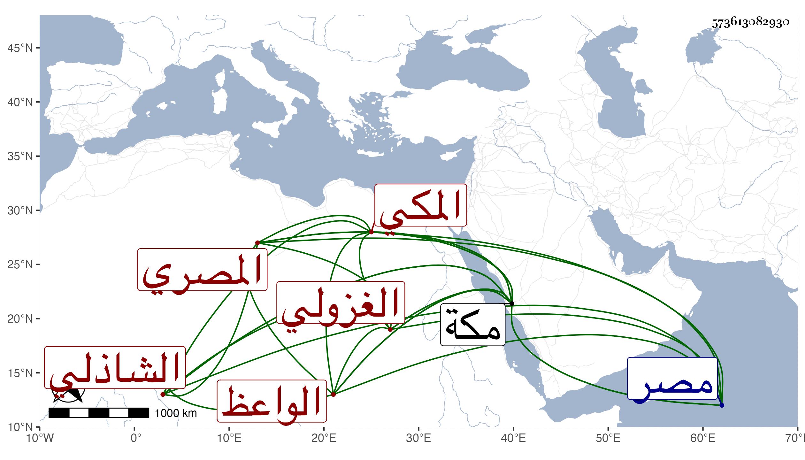

0902Sakhawi.DawLamic.ITO20230111-ara1.EIS1600.573613082930
Biography ID: 573613082930
780
محمد بن قاسم بن علي الشمس المصري ثم المكي الشاذلي الواعظ الغزولي . مات بمكة في ربيع الآخر سنة خمس وثمانين وقد قارب الستين ظنا وكان قد قرأ القرآن واشتغل قليلا وفهم وقرأ على العامة بمكة بل كان قارئ المراسيم الواردة لها من مصر واستقر به الأمير خير بك من حديد في مشيخة سبعة هناك وكثر توجهه للزيارة النبوية في كل سنة غالبا وتزوج كثيرا . وله نظم فمنه مما ذيل به الأبيات المضافة للزمخشري فقال :
| طوبى لعين عاينت أم القرى | وأتت لها حول الطواف مبادره |
| ورجالها طافوا بها من حولها | وقلوبهم بالله أضحت عامره |
